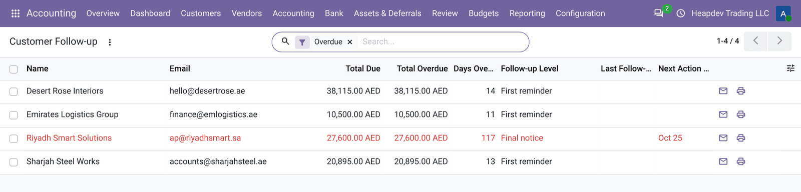
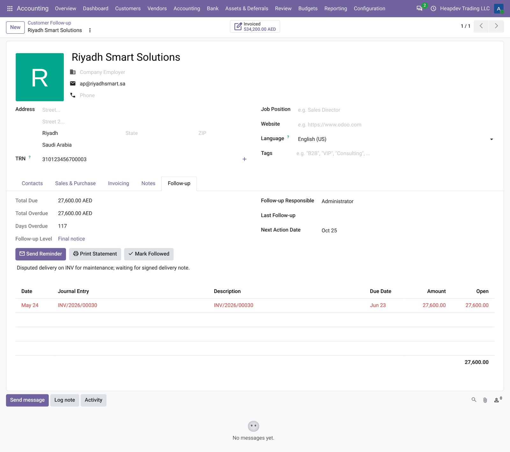
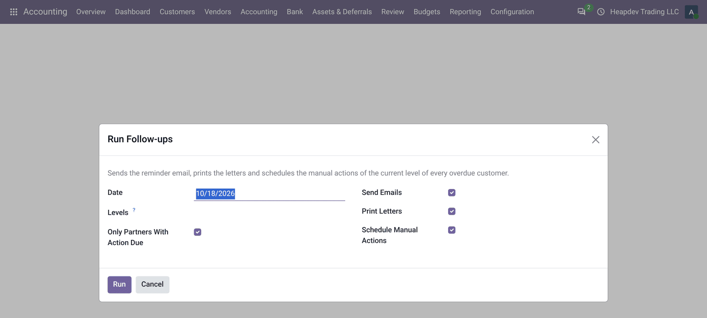
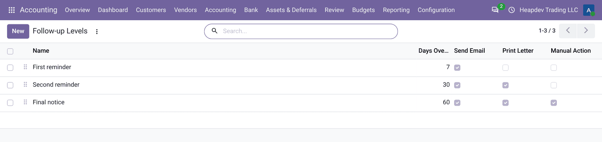

DUNNING · REMINDERS · STATEMENTS · AGING
Customer Follow-up & Statements
Overdue reminders, follow-up levels and bilingual customer statements.
متابعة العملاء وكشوف الحساب
تذكيرات المتأخرات ومستويات المتابعة وكشوف حساب العملاء ثنائية اللغة.
Know who to call
Every overdue customer with amount, days late, level and next action.
One-click reminders
Professional emails with the open items and the statement PDF attached.
Batch processing
Run all follow-ups at once: emails, letters and manual action activities.
What it does
ماذا يفعل التطبيق
Customer Follow-up & Statements helps you collect faster. Define follow-up levels by days overdue, see every customer with overdue invoices, their total due, days late, level and next action date, send reminder emails with the open invoices and a bilingual statement PDF, print letters and schedule calls. Keep promise-to-pay notes and a responsible user on each customer and run all follow-ups at once.
يساعدك تطبيق متابعة العملاء وكشوف الحساب على التحصيل بشكل أسرع. عرّف مستويات المتابعة حسب أيام التأخير، واعرض كل عميل لديه فواتير متأخرة مع إجمالي المستحق وأيام التأخير والمستوى وتاريخ الإجراء التالي، وأرسل رسائل تذكير بالفواتير المفتوحة وكشف حساب PDF ثنائي اللغة، واطبع الخطابات وجدول المكالمات. احتفظ بملاحظات وعود السداد ومستخدم مسؤول لكل عميل وشغّل كل المتابعات دفعة واحدة.
Highlights
أبرز الميزات
| ✓Follow-up levels | مستويات المتابعة |
| ✓Customer follow-up list | قائمة متابعة العملاء |
| ✓Reminder emails | رسائل التذكير |
| ✓Bilingual customer statement | كشف حساب ثنائي اللغة |
| ✓Batch follow-up run | تشغيل المتابعات دفعة واحدة |
| ✓Notes and responsible | الملاحظات والمسؤول |
How to use
طريقة الاستخدام
1STEP 1 · LEVELS
Review the three default levels under Accounting > Configuration > Follow-up Levels.
راجع المستويات الافتراضية الثلاثة في المحاسبة > الإعدادات.
2STEP 2 · FOLLOW UP
Accounting > Customers > Follow-up: open a customer, send a reminder or print the statement.
المحاسبة > العملاء > المتابعة: افتح العميل وأرسل تذكيراً أو اطبع الكشف.
3STEP 3 · BATCH
Use Run Follow-ups to process every overdue customer in one go.
استخدم تشغيل المتابعات لمعالجة كل العملاء المتأخرين دفعة واحدة.
📷 Want to see it? Open the Screenshots tab above for 7 real screenshots.
افتح تبويب لقطات الشاشة في الأعلى لمشاهدة 7 لقطة حقيقية.
Features in detail
الميزات بالتفصيل
Follow-up levels
First reminder, second reminder and final notice (fully editable) triggered by the days overdue of the oldest invoice, each with email, letter and manual action options and a message with placeholders.
مستويات المتابعة
التذكير الأول والثاني والإشعار الأخير (قابلة للتعديل بالكامل) حسب أيام تأخر أقدم فاتورة، لكل منها خيارات البريد والخطاب والإجراء اليدوي ورسالة بعناصر نائبة.
Customer follow-up list
Every customer with total due, total overdue, days overdue, current level, next action date and responsible.
قائمة متابعة العملاء
كل عميل مع إجمالي المستحق والمتأخر وأيام التأخير والمستوى الحالي وتاريخ الإجراء التالي والمسؤول.
Reminder emails
One click opens the email composer with a professional message listing the open invoices and the statement PDF attached.
رسائل التذكير
نقرة واحدة تفتح محرر البريد برسالة احترافية تسرد الفواتير المفتوحة مع إرفاق كشف الحساب PDF.
Bilingual customer statement
English | Arabic statement of account with the company TRN, open invoices, days late and aging buckets.
كشف حساب ثنائي اللغة
كشف حساب إنجليزي | عربي مع الرقم الضريبي للشركة والفواتير المفتوحة وأيام التأخير وفئات الأعمار.
Batch follow-up run
Process all overdue customers at once: send the emails, print the letters and schedule manual action activities.
تشغيل المتابعات دفعة واحدة
عالج كل العملاء المتأخرين دفعة واحدة: أرسل الرسائل واطبع الخطابات وجدول أنشطة الإجراءات اليدوية.
Notes and responsible
Keep promise-to-pay and dispute notes, a responsible user and the next action date on each customer.
الملاحظات والمسؤول
احتفظ بملاحظات وعود السداد والنزاعات ومستخدم مسؤول وتاريخ الإجراء التالي لكل عميل.
Screenshots
لقطات الشاشة
Real screenshots from a demo company with the UAE chart of accounts.
لقطات حقيقية من شركة تجريبية بدليل حسابات الإمارات.
1Customers to follow up with overdue amount and level
العملاء للمتابعة مع المبلغ المتأخر والمستوى

2Follow-up tab on the customer with notes and actions
تبويب المتابعة في العميل مع الملاحظات والإجراءات

3Bilingual customer statement of account
كشف حساب العميل ثنائي اللغة

4Run all follow-ups at once
تشغيل كل المتابعات دفعة واحدة

5Configurable follow-up levels
مستويات متابعة قابلة للتهيئة

6Arabic interface: customer follow-up
الواجهة العربية: متابعة العملاء

7Customer statement printed for an Arabic user: Arabic-first bilingual labels
كشف حساب العميل لمستخدم عربي: عناوين ثنائية اللغة تبدأ بالعربية

Frequently asked questions
الأسئلة الشائعة
Is it really free?
Yes. This app is free and licensed LGPL-3.
هل هو مجاني فعلاً؟
نعم، هذا التطبيق مجاني ومرخص LGPL-3.
Does it replace Odoo Enterprise accounting?
It covers the most used Enterprise accounting reports and tools for Community users. It does not include bank synchronisation, OCR or consolidation.
هل يغني عن محاسبة إنتربرايز؟
يغطي أكثر تقارير وأدوات محاسبة إنتربرايز استخداماً لمستخدمي المجتمع، ولا يشمل مزامنة البنوك أو التعرف الضوئي أو التوحيد.
Does it change my existing entries?
No. Reports read the posted journal items; assets, PDC and recurring entries create normal journal entries you can review.
هل يغير قيودي الحالية؟
لا. التقارير تقرأ بنود اليومية المرحّلة، والأصول والشيكات والقيود المتكررة تنشئ قيوداً عادية يمكن مراجعتها.
Which languages are included?
English and a complete Arabic translation; PDFs are printed in English and Arabic side by side.
ما اللغات المضمنة؟
الإنجليزية وترجمة عربية كاملة، وتُطبع ملفات PDF بالإنجليزية والعربية جنباً إلى جنب.
Is it multi-company?
Yes, every report and record follows the current company.
هل يدعم الشركات المتعددة؟
نعم، كل تقرير وسجل يتبع الشركة الحالية.
Requirements
المتطلبات
Depends only on account and mail. Works on Community and Enterprise databases; no extra Python packages.
يعتمد فقط على تطبيقي المحاسبة والمراسلات. يعمل على قواعد بيانات المجتمع وإنتربرايز دون حزم بايثون إضافية.
Support | الدعم
Free app by Adil Akbar. For questions, customisation or implementation support contact adilak389@gmail.com.
تطبيق مجاني من عادل أكبر. للاستفسارات أو التخصيص أو دعم التنفيذ تواصل عبر البريد adilak389@gmail.com.